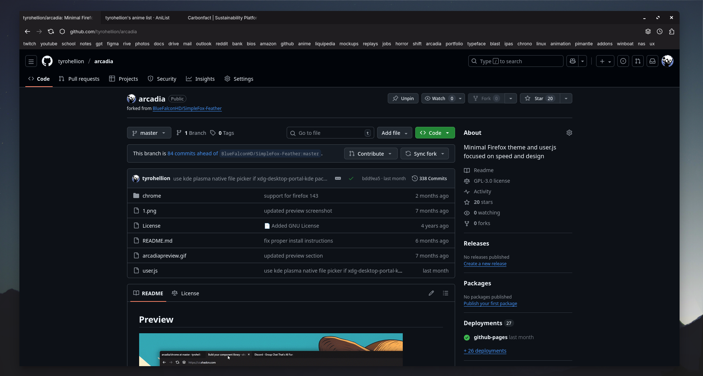
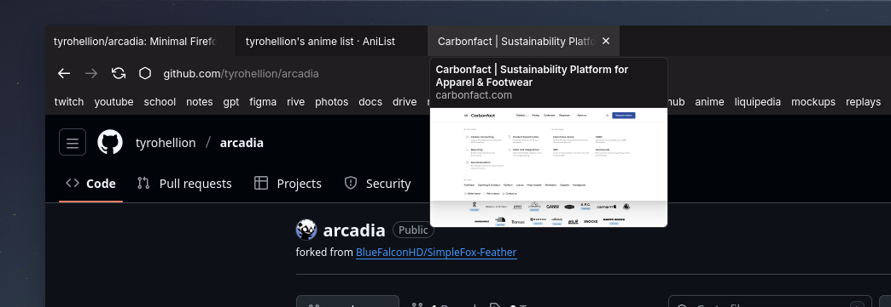
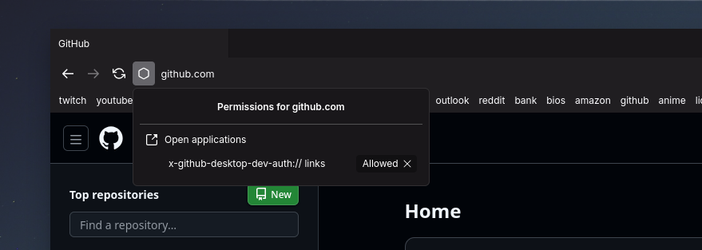
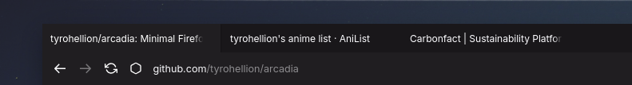
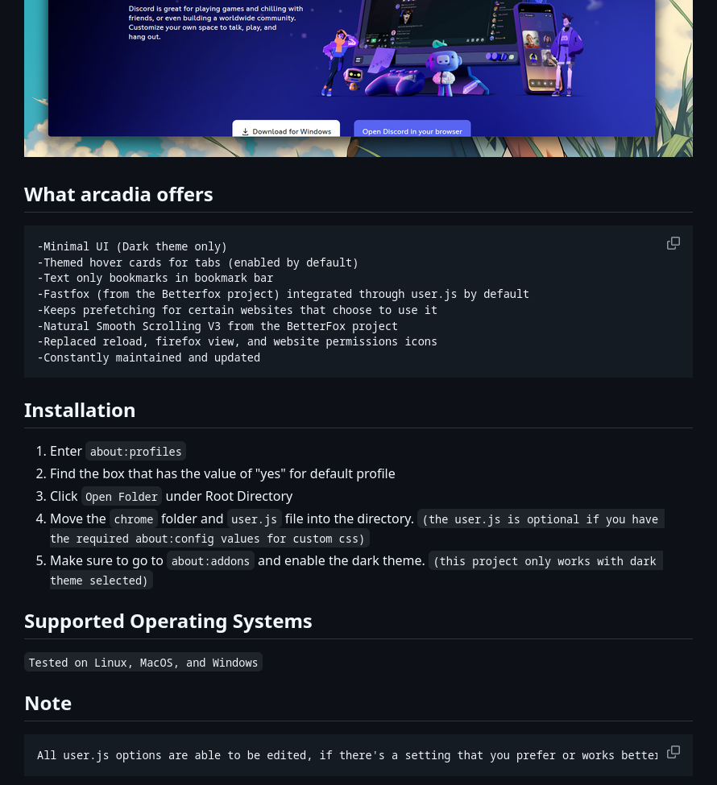

arcadia
Custom FireFox CSS theme and User.js
Roles
User Interface Designer
CSS Engineer
Project Maintainer
Tools
CSS
GitHub
User.js
Deliverables
Fully Featured Firefox Theme
User.js Custom Config
GitHub Installation Tutorial
Duration
2022-Present
Overview
I fell in love with the Firefox web browser because of the entire UI being written in CSS.
I've always liked CSS and wanted to take on a challenge of redesigning the firefox UI with
my knowledge of CSS.
Project goals
Easy Installation
I wanted to create a project that let's even
non-tech savy users install and enjoy the project. So many technical things aren't
accessible for casual users because it's too complicated to setup.
Maintainance
After researching other FirefoxCSS themes the
community has made, I realized that they go unmaintained often and usually break after a
Firefox update from Mozilla. My goal was to update the theme whenever something in the
UI
breaks so users of the project have someone to rely on.
Minimal
Above all I wanted a design that I was happy with.
I wanted a minimal browser interface that didn't get in the way and didn't have any
distracting icons.
Process
Starting point
I found an abandoned FirefoxCSS project on GitHub that had a lot
of the elements that I was trying to replicate. It had a lot of broken parts, but it was
still a good starting place. I decided to fork the project and get started on fixing it up!

Minimum Viable Product
Fixing Broken Elements
A lot of elements of the UI had been naturally overwritten or
changed by Firefox updates so I took on the task of rewriting elements or adding new CSS
styles.


Adding More Functionality
Although this original project was great, it was a little too minimal
even for my taste. With this theme there was no way of accessing tracking protection for a
certain website or cookie settings because of the removal of certain buttons. They also didn't
have any back or forward buttons which I wanted back in the design.

Replacing Icons
Next I replaced and added some new icons for the browser UI. I tried
to use icons that had a really nice look together.

User.js and Installation Tutorial
Firefox has this awesome feature where you can have a User.js config
file that defines certain behaviors the browser should follow. One of these behaviors is the
required manual config variables that is needed to allow custom themes. I included this in the
User.js file to make it more user-friendly and painless. On my GitHub repository for this
project I have a formatted readme file with all the installation instructions. Super easy to
follow and setup.

Final Result
I achieved my goal of having a project that is constantly
maintained and minimal in nature. I learned a lot about this project and what it means to be
reliable for other people. This project is still ongoing and can be used by anyone by going to
my GitHub!
{kind=link}
{kind=link}
{kind=link}
{kind=link}
{kind=link}
Takeaways
Reliability is extremely important for people. I got good
experience with debugging interfaces along with honing my CSS skills more and more.